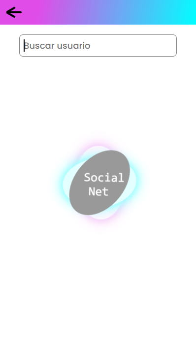

Este proyecto se puede considerar como un modesto clon de twitter, para el cual hicimos uso de un paradigma que últimamente está en tendencia en varias startups y es el de "mobile only" de manera que su UI y UX está construida especificamente para mobile, aunque en este caso de todas formas haya una pseudoversión para escritorio en la que se visulizará la app en un layout vertical el cual simulará la pantalla y/o viewport de un smartphone.
video review
Este proyecto basa todo su backend en el backend as a service que nos proporciona firebase, y es gracias a este backend de firebase que podemos hacer uso de su de base de datos no relacional, así como de su storage para subir archivos como lo podrían ser imágenes o videos, y también de su sistema de autenticación.
Social-net esta construido con Next.js, el cual es el framework de React.js para producción con el cual podemos trabajar de lado del servidor, de manera que podamos hacer uso de sus diferentes tipos de render ya sea CSR (Client Side Rendering) , SSR (Server Side Rendering), SSG (Static Side Generation) y/o ISR (Incremental Static Regeneration), lo cual podemos definir en cada page de nuestra aplicación a través de métodos que nos proporciona Next.js como lo son getStaticProps junto con getStaticPaths, o haciendo uso de getServerSideProps, o simplemente renderizando en el cliente con un useEffect de React.js, también podemos hacer una combinación de estos utilizando diferentes métodos para cada page, esto según los objetivos que persigamos para con nuestra app.
SignIn & SignUp
Así las cosas , para la sección principal de login, habilitamos en firebase los servicios de GitHub y de Google para que el usuario se pueda dar de alta en la aplicación con cualquiera de estos dos métodos de autenticación. Además de esto , también tenemos el registro a través de correo y contraseña, el cual al realizar dicho proceso envía un correo de validación al correo del usuario en cuestión, ya que el usuario tiene que validar su correo para poder ingresar a la app. También a la hora de hacer login el usuario puede solicitar cambiar su contraseña si la ha olvidado, y entonces se le envía un correo donde puede establecer una nueva contraseña para su cuenta.
En cuanto a la UI de esta sección de signIn y signUP podemos encontrar el logo animado de la aplicación construido desde cero con css , y también podemos observar que las secciones de sigIn y signUp los manejamos con su propio modal cada una.
Una vez autenticados, el usuario es redirigido a la sección del timeline en la home donde podrá visualizar todos los comentarios que los demás usuarios de la App han creado y/o publicado.
Home
En la home timeline podemos visualizar todos los posts que se han plubicado en la app.
En esta página estamos haciendo uso de un renderizado del lado del cliente a través del hook useEffect de React , puesto que necesitamos que esta sección sea lo mas dinámica posible debido a que estará pendiente a cada comentario que se publique para que este se pueda mostrar en tiempo real, por tanto con useEffect podemos escuchar cada uno de los datos que se van adicionando a nuestra DB y asi mostrarlos al instante.
Estructura del post
Cada post se compone por; la foto de perfil del usuario que lo publicó, su username, un timestamp que indica hace cuanto se publicó el post, el contenido del post ya sea solo texto, o texto e imagen y tambien en su sección inferior vemos los iconos de comentario y favoritos. Cada una de estas secciones ejecuta una acción especifica al hacer click sobre ellas.
Al hacer click sobre la imagen de perfil o el username esto nos llevará al perfil del usuario que creó el post, donde podremos ver todos los post que este usuario ha hecho.
Un click sobre el texto del contenido del post, o sobre el icono de comentario, nos llevará a la vista de detalle individual del post, donde podremos observar todos los comentarios que tiene dicho post, y por ende una sección para agregar un comentario sobre el post en cuestión. También podemos ver que el incono de comentario muestra la cantidad de comentarios que posee dicho post.
Cuando damos click sobre la imagen que hace parte del contenido en el post, se abrirá un modal para poder ver dicha imagen de una forma mas detallada ya que nos mostrará el tamaño completo de la imagen.
Y, por último tenemos el icono de estrella o favoritos, el cual permite al cualquier otro usuario de la app agregar dicha publicación a su sección de favoritos en su perfil. (este icono cumple la funcion de agregar a favoritos (estrella amarilla), y tambien si le volvemos a dar click eliminará dicho post de nuestros favoritos (estrella blanca)).
Tambien podemos ver en la parte superior derecha de cada uno de nuestros posts, o comentarios que hagamos dentro de los posts, un incono de “cesta de basura” la cual nos permitirá eliminar el post o el comentario correspondiente.
Header
En la sección de la home también encontramos un header, el cual posee un botón para hacer logout de la aplicación
Footer navbar
Además de este header tenemos una nav-bar en el footer en la cual tenemos varios iconos que nos llevan a alguna sección en específico de la app.
El icono de la “Home”, nos permitirá refrescar la home.
En este footer navbar también encontramos el icono de "lupa", la cual como podemos intuir nos servirá para hacer una busqueda, en específico la busqueda de cualquier usuario en la app que haya hecho alguna publicación (un usuario solo aparecerá en el buscador si ha hecho alguna publicación, de lo contrario no aparecerá en los resultados).


Encontramos además, un icono con forma de “tomar nota”; la cual dirigirá al usuario hacia la sección donde podrá crear un nuevo post con la posibilidad de subir una imagen también, y esto se publicará al hacer clic en el botón de "Nettear", Nettear porque denomine a cada una de las publicaciones como un Nett, asi como Twitter por su parte los denomina tuit. Una vez publicado dicho Nett, aparecerá de manera casi que instantánea en el timeline de la home , de manera que cualquier usuario que este visualizando el timeline de la home pueda ver dicho comentario en tiempo real y al instante de que este haya sido creado.
En esta sección el usuario también puede subir una imagen haciendo uso del método de Drag and Drop dentro de la sección donde se escribe el Nett (debido a que dicho evento no esta disponible en móviles esta opción solo funciona desde una laptop u ordenador desktop), o también podemos agregar una imagen haciendo click en el botón negro que posee el icono de una imagen, el cual abrirá el explorador de archivos de nuestra pc o móvil, para que podamos elegir alguna imagen que tengamos guardada en el equipo, o en el móvil también tenemos la opción de abrir la cámara para tomar un foto en ese mismo instante y subirla a nuestro post.
Y en último lugar encontramos un icono en forma de circulo que posee la imagen de nuestro avatar, el cual al hacer click nos llevará a nuestro perfil
Profile
En esta sección entonces podemos actualizar nuestra imagen de avatar y el username, también tendremos 2 secciones , una que dice “tus Netts” que nos mostrará todos los posts que hemos publicado, y también una sección que dice “favs” en la cual podremos ver una colección de posts a los cuales les hemos dado favoritos, los cuales estan disponibles para consultarlo en cualquier momento , siempre y cuando el usuario que publicó el post no lo haya eliminado.
Como ya dijimos anteriormente podemos agregar y eliminar de favoritos cualquier post desde cualquier lugar donde estemos visualizando dicho post, ya sea desde el timeline de la home, desde la vista individual del post , o desde nuestra sección de favoritos del perfil.
Dynamic routes
También hacemos uso de las rutas dinámicas en Next.js , para que con esto podamos mostrar de manera individual cada Nett al que el usuario le de clic, y para la página de perfil del creador del post. Para el renderizado de cada una estas páginas de detalle hicimos uso de un renderizado desde el servidor , esto a tráves de getServerSideProps . de esta manera estamos logrando entregar al browser una estructura de html lista, que ha sido renderizada previamente en el servidor
Y el porqué, de que cada página de detalles de cada Nett se renderize desde el servidor es porque se busca que cada uno de los Netts que se publican sean fácilmente indexados y crawleados por las spiders de Google, de manera que todo aquello que se publique en la app pueda llegar a posicionarse en motores de búsqueda, y así por ende mejorar el SEO de la app.
También desde la consola de firebase establecimos algunas reglas de seguridad para que el usuario solamente pueda ingresar a las secciones de timeline de la home y la de crear un Nett, solamente si esta autenticado y ha verificado su correo a la hora de registrarse, de lo contrario si el usuario intenta ingresar a la url de dichas secciones sin estar autenticado sera redirigido automáticamente a la sección de login.